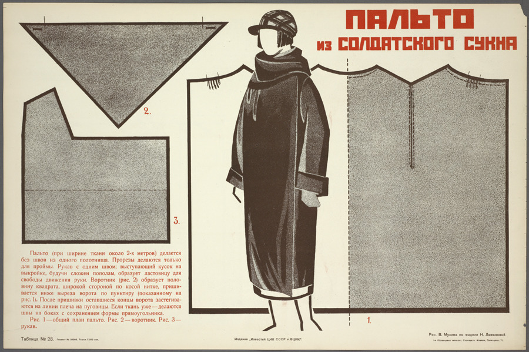
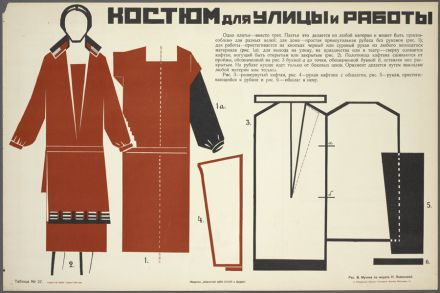
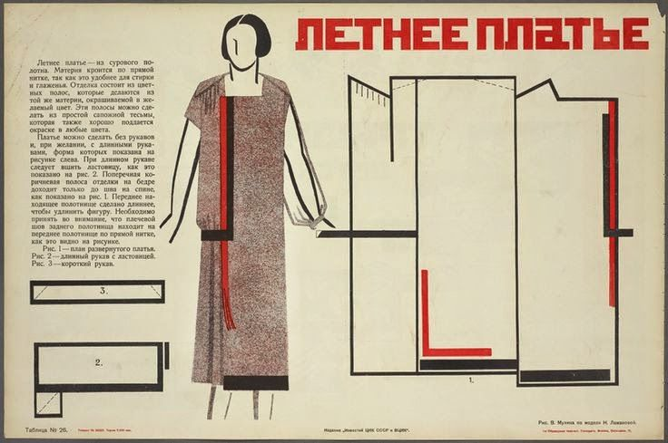
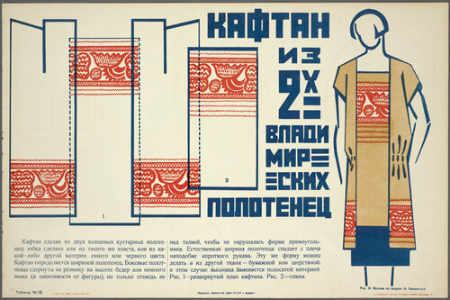
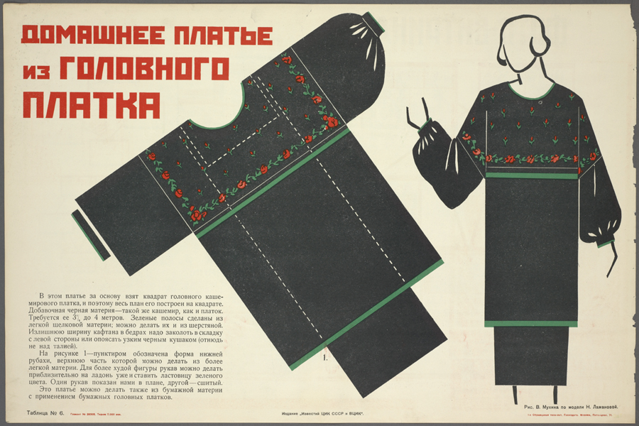
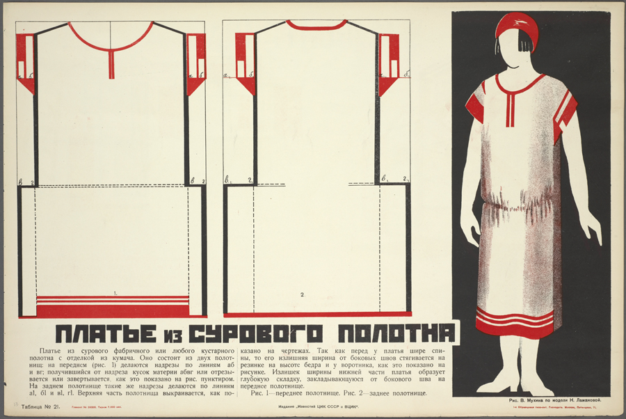
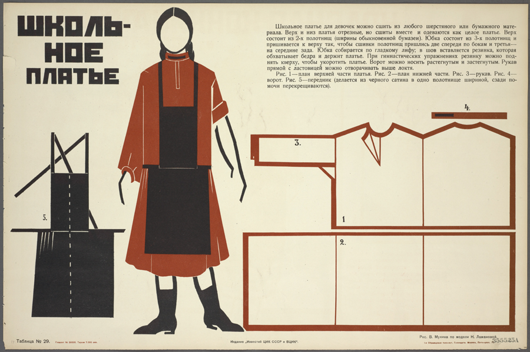
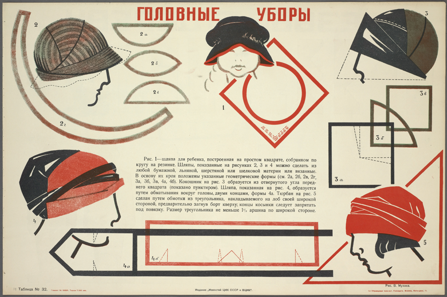

Vera Mukhina, known as the queen of socialist realism, was a major influential artist in the USSR. She was commissioned by Lenin to create a variety of state-sponsored sculptures and busts to replace the imperial art public art that had been overthrown with the revolution. She was also well known for her talents in industrial product design, and aided in the development of soviet manufacturing by designing iconic house pieces such as the Mukhina tumbler. Her most well-known sculpture is the Worker and Kolkhoz Woman statue in Moscow.
Another, lesser known, piece of her work is The Art in EveryDay Life, which included a collection of simple and easy to assemble patterns for home dressmakers. Known as "Patterns for the Proletariat" and co-authored by Nadezhda Lamanaova, this series featured a collection of uber versatile outfits that could be made out of simple house items (like a spare curtain, headscarf, or towel). The intent behind this collection was to help every woman to be able to sew for themselves and in the meantime also show them what beauty of form, material and color could be through the clothes.
Read more here

Coat from soldier's cloth

School dress

Woman's theatre costume

Canvas towel caftan

Headscarf dress

Canvas dress with trim
Paper or fabric sports skirt pants

3 in 1 dress for home and street

Hats
Making Our Own (Attempt 1)
I really loved the idea, for this is literally worldbuilding via fashion design. In a society where we work for the collective good, where we aren't controlled by capital, where modes of production are made to benefit the people, we must rethink our relationship to consumer goods such as clothes, which for the past 300 years have been produced via an albeit opulent, inefficient, exploitative and wasteful system.
Today, while fashion journalism and marketing exposes us to more styles and clothing than anyone in any other generation has ever seen in their entire lifetimes, we are still completely distant from the clothing manufacturing process, and something that used to be a basic household skill (like sewing a button) is now seen as very strange and technical to us, which is wild given that clothing is at the bottom of the pyramid of human needs.
Thus, by offering people a simple and very beautiful how-to guide for sewing basics, this is what "sustainable" design truly looks like. However, in practice, the book had several limitations. The patterns were not drawn to scale and they had some very wonky fits.
Check out two of my attempts below.


{kind=link}
{kind=link}
{kind=link}
{kind=link}
{kind=link}
{kind=link}
{kind=link}
{kind=link}